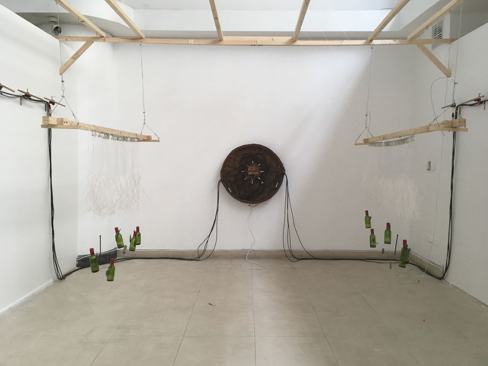
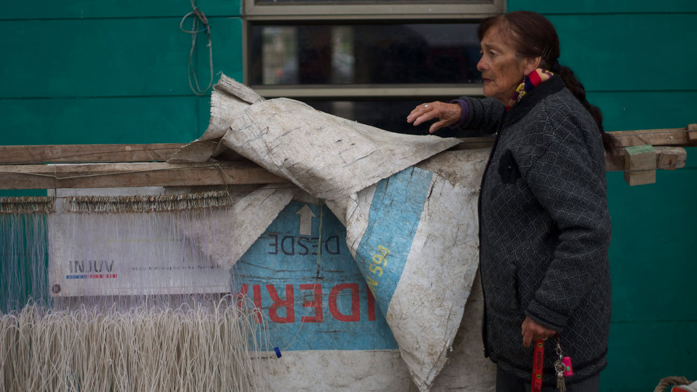

2018

Instalación, resultado del proceso de Residencia en Sala B.A.S.E., del festival de Arte Sonoro Tsonami
Exhibida en Sala B.A.S.E., Valparaíso, de Octubre a Noviembre de 2018
Exhibida en Centex, Ministerio de las Culturas, Valparaíso, de Abril a Julio de 2019
Exhibida en Casa Colorada, Municipalidad de Santiago, Octubre de 2019 a Enero de 2020
El proceso de residencia se inició a partir de una investigación sobre la relación entre las mujeres y la tecnología en Valparaíso, encontrándose en la caleta Portales con Rosa Oyarce y el oficio de las encarnadoras. Es ella quien les enseña cómo se construye el espinel, artefacto que es trabajado por mujeres para la pesca artesanal.
La instalación «Dispositivas de encarnación» nos muestra este oficio y al espinel desde una dimensión sonora y visual, en un ejercicio que no sólo releva la técnica de una tecnología artesanal, sino que también dialoga de cerca con los relatos de vida y las formas de laborar de las mujeres de la caleta.
